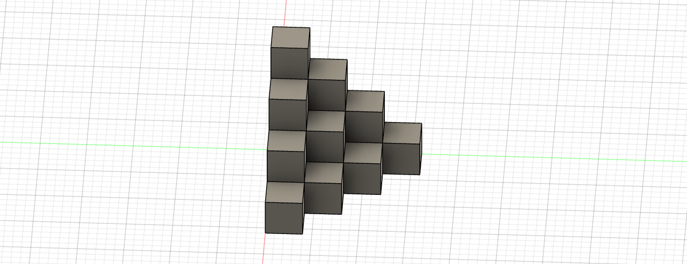
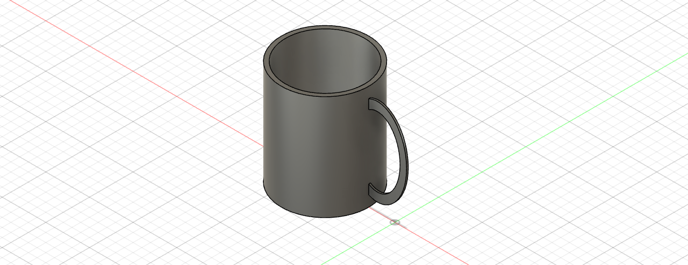

Autodesk Fusion 360
this are the sketch that i have done using fuion 360
The tools that i have used for this model in fusion 360 are rectangle and and circles for the outer layer next i will have trim out the extra parts in order for the rectangle and next i will use the diameter to to adjust the from of the rectangule and circle to the sizes for both outer layer and inner layerthat i wanted lastly i will insert the circle an the centralized rectanglar to the inner part of the drawings
The The tools that i have used for this model in fusion 360 are rectangle and and two circles at the side next i will have to trim out the extra parts in order for the rectangle and two circle to be matched and i will use the diameter to to adjust the fram of the rectangle and circle to the sizes for both outer layer and inner layer that i wanted
The The tools that i have used for this model in fusion 360 are circle for the body and and rectangle next i will have to trim out the extra parts in order for the rectangle and circle to be matched next i will have to offset the circle and rectangle in order for the shape to appear. and lastly i will insert the text on the kechain
The tools i have used for this model in fusion 360 is rectangle and circle first i will extrude out the rectangle to the size that i want and next i will have to insert the circle into the rectangle and extrude out the size for the circle after i have extrude out the circle i will have to use rectangular pattern to extrude out the same sizes cricle after i extrude everything out i will have to use the shell function to cut out the bottom part and nexti will insert the three circle below and for the circle i will have to use the rectangular pattern in order for the three circle to looks the same lastly i wil have to insert the text into the kechain .
The tools i have used for this model in fusion 360 is line first i will have to draw out the cube one at a time by adjusting the sizes of the cube and next i wll have to extrude one layer at a time after i have draw out the cube after i have finished four layer i will have to adjust to the bottom of the model and use the shell to cut out the diameter of the blocks lastly i wll have to insert the text into the keychain.

The tools that i have used for this model in fusion 360 are circle for the bodyand and elipse for the handle first i will have to create the circle and use the diameter to measure the size that i want after i have get the diameter i will use extrude to drag up the body part of the cup and after i have drag up i will create the handle by using elipse to draw the handle after i have finished drawings the handle i will extrude out the handle by selecting cut and join and adjust the size of the handle.

The tools that i have used for this model in fusion 360 are rectangle and line first i will have to use line to draw the legs for the laptop stand according to the size that i want and after that i will have to extrude the aptop stand out and after i have extrude i will have to copy the laptop stand to other side after after i have finish copy the both side i will have to do the top part and i will use the rectangle to draw the top after i have draw i will adjust the size and dimension of the rectangle after i have finished the top part i will have to draw the bottom for supporting the top and lower part by using the rectangle after i have draw the rectangle i will have to copy another rectangle to the front part and lastly i will have to select the top ,legs and support part to convert to DFX file and use the fillet function to trim out all the sharp edge of evry section.